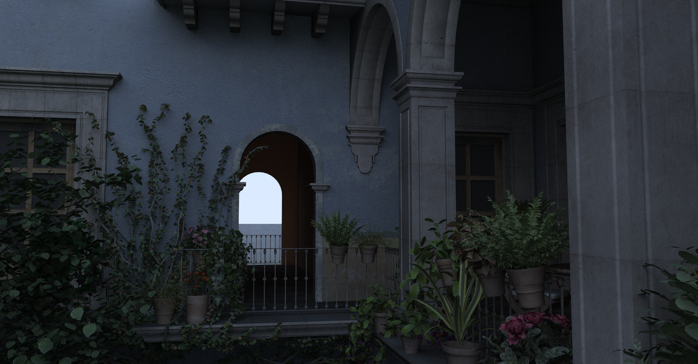
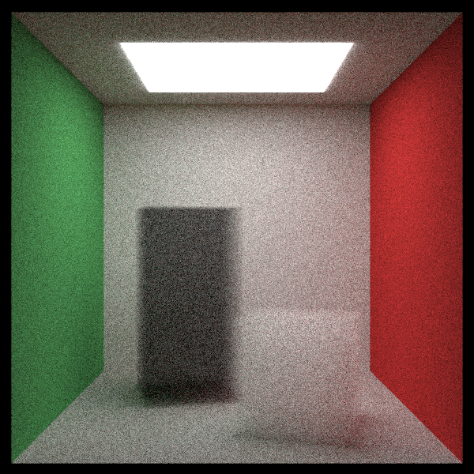
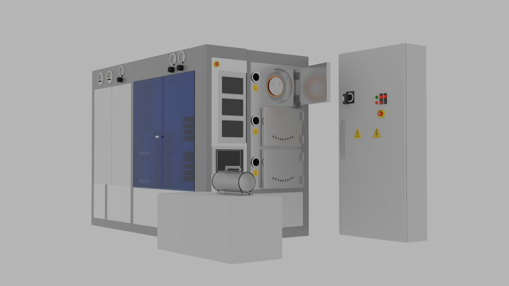

|
Vishesh Gupta I am currently interning at Max Planck Institute for Informatics advised by Dr. Gurprit Singh. I graduated from Indian Institute of Technology, Kharagpur with a Bachelors in Electrical Engineering in 2024. I am interested in computer graphics; specifically light transport simulation, monte carlo sampling and real-time path tracing. I would also like to explore how to leverage latest machine learning research to improve rendering. |
{kind=link}
|
 |
Optix Path Tracer
Learning to use the SlangD shader by implementing an Optix path tracer with model loading |

|
Gradient Domain Rendering, with novel shift mapping
Implementation of a novel shift mapping technique, using stochastic lightcuts for correlated light cluster sampling to generate a gradient image. A report of my work could be found here. |
|
 |
Ray Tracing in One Weekend
A simple path tracer using 'Ray Tracing in One Weekend' series. |
|
 |
Silicon Wafer Fabrication Training Simulation
Virtual Training Simulation of a silicon wafer fabrication machine to addresses cost constraints, enabling large-scale user training without direct exposure to expensive equipment |